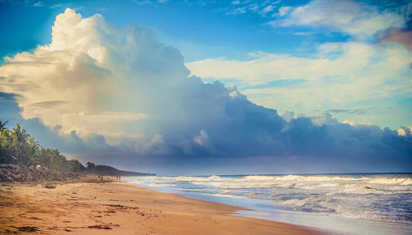
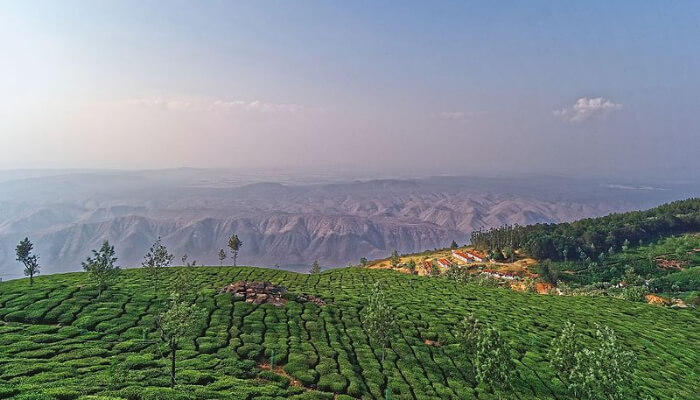
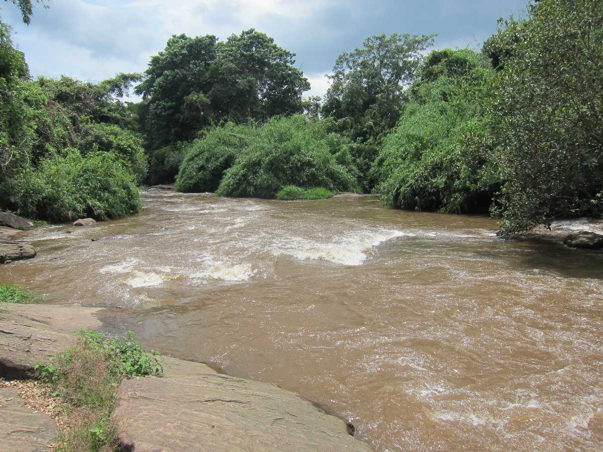

Cherai Beach
Cherai Beach, which is one of the best-voted beaches of the state, is situated at a distance of 30 km from Kochi city. Its strategic location on the northern end of the Vypin Island in Kochi makes it a perfect merging point of the sea and backwaters. The surrounding greenery and the seashells present in different shapes and Chinese fishing nets add to the beauty of the sea. Its coastline alone runs for about 15 km and plays a distinguishing factor from all the other beaches.
Kodanad Tourism
Kodanad is widely known for its Elephant Training Centre, which can offer fascinating views. People often visit Kodanad View Point for witnessing beautiful sunsets and sunrises. Kodanad holds untouched beauty, attracting even film crews. Located across the banks of Periyar river, various walkways are there alongside the river. Kodanad even offers Elephant safaris, which are safe and comfortable. The place has great weather almost all year round, attracting domestic and international tourists.
Kochi Tourism
Situated on the south-west coast of India, Kochi or Cochin is a bustling commercial port city with a trading history that dates back to at least 600 years. Called as the Queen of the Arabian Sea, the city is the financial, commercial and industrial capital of Kerala.A gaggle of islands interconnected by ferries, this cosmopolitan town has upmarket stores, art galleries and some of the finest heritage accommodations.

Paniyeli Poru
Located on the Periyar River, Paniyeli Poru is a spot in Ernakulam that has been a tourist attraction for years. The natural bottleneck formed by River Periyar has led to an interesting and wild convergence of waters over a rocky terrain. It is also at the edge of the Thattekad reserve forest and rubber plantations in this area. The water here is scenic, with small rapids and a turbulent, heavy flow.
